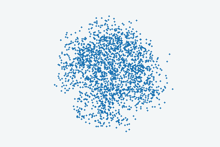

Move the existing smoke patch LEFT and UP
Predicted point clouds

Initial state + 24 predicted keyframes, shown at 6 keyframes/s for inspection. Coordinates are unchanged.
Initial image and conditions
uniform initial gas velocity=[-1.431084, 0.715542, 0.0], region=all gas tracers. Model units, not calibrated SI units.
Fixed camera. Move the existing smoke patch LEFT and UP from the first frame. Initial-velocity condition v0=[-1.431084, 0.715542, 0.0], magnitude 1.6, model units. Advect the same visible structures, with curling, mixing and gradual fading. No new emission, source, extra cloud, moving solid or camera motion. Preserve the static background; no phase change or falling coarse grains. Coordinates: x screen right, y screen up, z depth. At the initial frame, every selected gas particle has the same velocity v0=[-1.431084, 0.715542, 0.0] in model velocity units; x is screen right, y is screen up, z is depth. The velocity applies to all gas tracers.